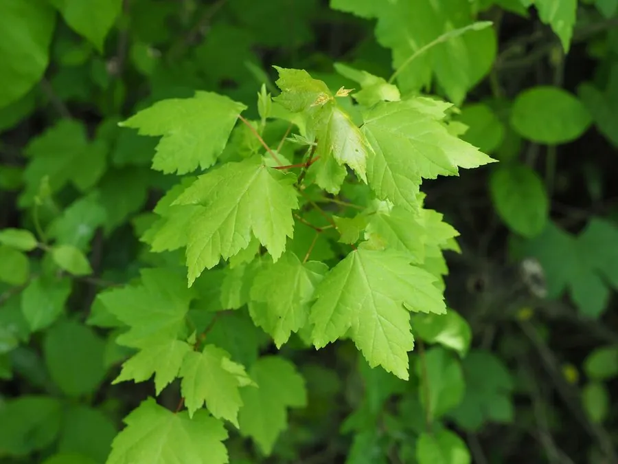

灌木与花木 · 植物界
羽毛枫 Acer palmatum 'Dissectum'

槭树科落叶灌木，叶片深裂如羽毛，秋季转红，树姿低矮优美，是庭院与盆景中的传统名贵观叶植物。
- 分类
- 门被子植物门纲木兰纲目无患子目科槭树科属槭属
- 栖息环境
- 庭院林下、水边与景石旁，喜温暖湿润和半阴
- 地理分布
- 原产日本；中国长江流域及北方园林广泛栽培
- 保护级别
- 暂无评估；栽培品种，未见野生居群
物种志
羽毛枫为槭树科槭属落叶灌木，是鸡爪槭的园艺品种，高 1–2 米，树冠开展，枝条细密。叶对生，掌状深裂至基部，裂片再羽状细裂，形如羽毛，春叶绿色，秋叶转为橙红至深红色。花小，紫色，伞房花序，花期 4–5 月；果实为翅果，两翅开展，果期 9–10 月。
羽毛枫原产日本，中国长江流域及北方园林广泛栽培，喜温暖湿润、半阴的环境，怕强光暴晒和积水，适宜疏松肥沃、排水良好的微酸性土壤。它叶形细裂如羽毛，秋季叶色鲜艳，树姿低矮优美，是庭院、盆景中的名贵观叶植物；常植于林下、水边与景石旁。栽培以嫁接繁殖为主，需注意保持空气湿度，夏季适当遮阴，避免叶缘焦枯。
形态与习性
- 株高1–2 米，树冠开展
- 叶形掌状深裂，裂片羽状细裂
- 花期4–5 月，花小、紫色
- 果期9–10 月，翅果
- 光照喜半阴，忌强光暴晒
- 水分喜湿润，忌积水
- 主要用途庭院观叶、盆景与景石配植
趣味知识
- 羽毛枫是鸡爪槭的园艺品种，叶片裂得比普通鸡爪槭更深更细。
- 它的叶形像一片片羽毛，因此得名。
- 秋季叶色转为橙红至深红，是庭院秋景的主角。
- 羽毛枫常用嫁接繁殖，嫁接苗能保持品种的叶形和叶色。